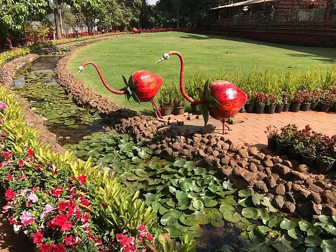

Venna Lake
A peaceful spot for boating surrounded by lush greenery.

Arthur's Seat
Known as the 'Queen of all points,' offering stunning valley views.

Mapro Garden
Explore delicious strawberry products and organic farming.

Echo Point
On the way to Arthers point you can see breath-taking scenery of echo point. The deep valleys and sharp cuts of mountains.

Lingmala Waterfall
This is very good picnic spot , close to Venna Lake situated on the road to Panchaga.

Bombay Point
The famous point in Mahableshwar. All the tourists gather here to see the beautiful natural light show i.e. sunset, popularly known as ‘Sunset Point’.